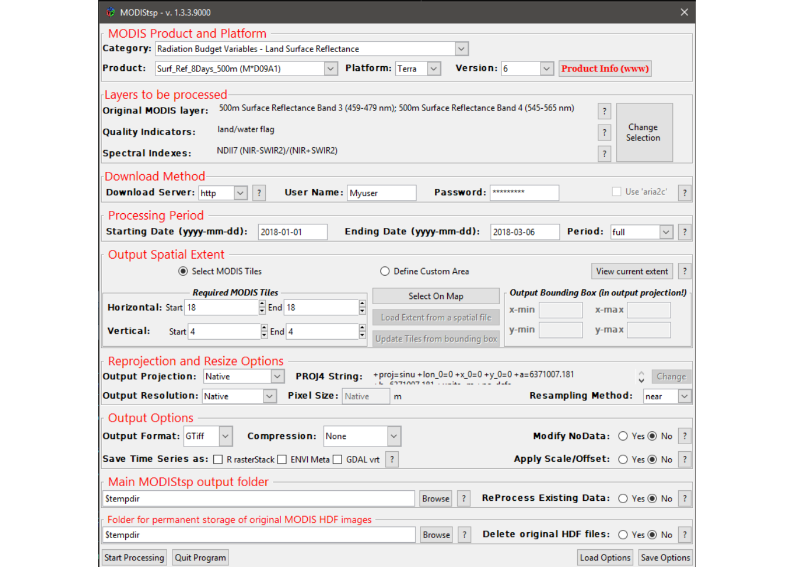

The easiest way to use MODIStsp is to use its powerful GUI (Graphical User Interface) for selection of processing options, and then run the processing.
To open the GUI, load the package and launch the MODIStsp function, with no parameters:
This opens a GUI from which processing options can be specified and eventually saved (or loaded) (Notes: 1, 2).
The GUI allows selecting all processing options required for the creation of the desired MODIS time series. The main available processing options are described in detail in the following.

Selecting Processing Parameters
Download Method:
Select the method to be used for download. Available choices are:
http: download through ftp from NASA lpdaac http archive (http://e4ftl01.cr.usgs.gov). This requires providing a user name and password, which can be obtained by registering an account at the address https://urs.earthdata.nasa.gov/profile;
ftp: download from NASA ftp archive (ftp://ladsweb.nascom.nasa.gov/);
offline: this option allows to process/reprocess HDF files already available on the user’s PC without downloading from NASA – useful if the user already has an archive of HDF images, or to reprocess data already downloaded via MODIStsp to create time series for an additional layer (It is fundamental that the HDFs are those directly downloaded from NASA servers ! (See here for additional details).
Checking the use_aria2c option allows to accelerate the download from NASA archives. This requires however that that the “aria2c” software is installed in your system. To download and install it, see: https://aria2.github.io/
NOTE: The best performances are usually achieved using http, though that may vary depending on network infrastructure.
Processing Period:
Specify the starting and ending dates to be considered for the creation of the time in the series corresponding fields. Dates must be provided in the yyyy–mm–dd format (e.g., 2015-01-31)
The Period drop-down menu allows to choose between two options:
full: all available images between the starting and ending dates are downloaded and processed;
seasonal: data is downloaded only for one part of the year, but for multiple years. For example, if the starting date is 2005-03-01 and the ending is 2010-06-01, only the images of March, April and May for the years between 2005 and 2010 will be downloaded. This allows to easily process data concerning a particular season of interest.
Spatial Extent:
Allows to define the area of interest for the processing. Two main options are possible:
Full Tiles Extent: specify which MODIS tiles need to be processed using the “Start” and “End” horizontal and vertical sliders in the Required MODIS Tiles frame. During processing, data from the different tiles is mosaiced, and a single file covering the total area is produced for each acquisition date (Note: pressing the “show map” button, a representation of the MODIS tiles grid is shown to facilitate the selection).
-
Resized: specify a custom spatial extent for the desired outputs either by:
Manually inserting the coordinates of the Upper Left and Lower Right corners of the area of interest in the Bounding Box frame. Coordinates of the corners must be provided in the coordinate system of the selected output projection;
pressing the “Load Extent from a Spatial File” and selecting a raster or vector spatial file. In this case, the bounding box of the selected file is retrieved, converted in the selected output projection, and shown in the “Bounding Box” frame. Required input MODIS tiles are also automatically retrieved from the output extent, and the tiles selection sliders modified accordingly.
Reprojection and Resize:
Specify the options to be used for reprojecting and resizing the MODIS images.
“Output Projection”: select one of the predefined output projections or specify a user-defined one. To specify a user selected projection, select “User Defined” and then insert a valid “Proj4” string in the pop-up window. Validity of the Proj4 string is automatically checked, and error messages issued if the check fails;
“Output Resolution”, “Pixel Size” and “Reprojection Method”: specify whether output images should inherit their spatial resolution from the original MODIS files, or be resampled to a user-defined resolution. In the latter case, output spatial resolution must be specified in the measure units of the selected output projection. Resampling method can be chosen among “Nearest Neighbour” and “Mode” (Useful for down-sampling purposes). Other resampling methods (e.g., bilinear, cubic) are not currently supported since i) they cannot be used for resampling of categorical variables such as the QA and QI layers, and ii) using them on continuous variable (e.g., reflectance, VI values) without performing an a-priori data cleaning would risk to contaminate the values of high-quality observations with those of low-quality ones.
Processing Options:
Several processing options can be set using check-boxes:
Output Files Format: Two of the most commonly formats used in remote sensing applications are available at the moment: ENVI binary and GeoTiff. If GeoTiff is selected, the type of file compression can be also specified among “None”, “PACKBITS”, “LZW” and “DEFLATE”.
Create Virtual Rasters: Specify if virtual multitemporal files should be created. These virtual files allow access to the entire time series of images as a single file without the need of creating large multitemporal raster images. Available virtual files formats are ENVI meta-files and GDAL “vrt” files.
Create RasterStack: Specify if the output time series should be also saved as as “R” rasterStack objects (with temporal information added through the “setZ” method of the raster package). This may be useful in order to easily access the preprocessed MODIS data within “R” scripts.
Change NoData values: Specify if NoData values of MODIS layers should be kept at their original values, or changed to those specified within the “MODIStsp_Products_Opts” XML file. By selecting “Yes” in the “Change Original NODATA values” check-box, NoData of outputs are set to the largest integer value possible for the data type of the processed layer (e.g., for 8-bit unsigned integer layers, NoData is set always to 255, for 16-bit signed integer layers to 32767, and for 16-bit unsigned integer layers to 65535). Information about the new NoData values is stored both in the output rasters, and in the XML files associated with them.
Scale output values: Specify if scale and offset values of the different MODIS layers should be applied. If selected, outputs are appropriately rescaled on the fly, and saved in the true “measure units” of the selected parameter (e.g., spectral indexes are saved as floating point values; Land Surface Temperature is saved in °K, etc.).
Main Output Folder for Time Series Storage:
Select the main folder where the pre-processed time series data will be stored. All MODIStsp outputs will be placed in specific sub-folders of this main folder (see XXX for details on MODIStsp naming conventions)-.
The “Reprocess Existing Data” check-box allows to decide if images already available should be reprocessed if a new run of MODIStsp is launched with the same output folder. If set to “No”, MODIStsp skips dates for which output files following the MODIStsp naming conventions are already present in the output folder. This allows to incrementally extend MODIS time series without reprocessing already available dates.
Output Folder for Original HDF Storage:
Select the folder where downloaded original MODIS HDF files downloaded from NASA servers will be stored.
The “delete original HDF files” check-box allows also to decide if the downloaded images should be deleted from the file system at the end of the processing. To avoid accidental file deletion, this is always set to “No” by default, and a warning is issued before execution whenever the selection is changed to “Yes”.
Saving and Loading Processing Options
Specified processing parameters can be saved to a JSON file for later use by clicking on the Save Options button.
Previously saved options can be restored clicking on the Load Options button and navigating to the previously saved JSON file.
(Note that at launch, MODIStsp always reloads automatically the processing options used for its last succesfull run .
Starting the processing
Once you are happy with your choices, click on Start Processing. MODIStsp will start accessing NASA servers to download and process the MODIS data corresponding to your choices.
For each date of the specified time period, MODIStp downloads and preprocesses all hdf images required to cover the desired spatial extent. Informative messages concerning the status of the processing are provided on the console, as well as on a self-updating progress window.
Note 1
PCs with a small screen can fail to visualize the whole GUI; in this case, the user can add scroll bars with MODIStsp(scrollWindow=TRUE))
Note 2
At the first execution of MODIStsp, a Welcome screen will appear, signaling that MODIStsp is searching for a valid GDAL installation. Press “OK” and wait for GDAL to be found. If nothing happens for a long time (e.g., several minutes), MODIStsp (and in particular the gdalUtils package on which it relies) is not finding a valid GDAL installation in the more common locations. To solve the problem: 1. Ensure that GDAL is properly installed in your system 2. (On Windows) If it is installed, verify that GDAL is in your system PATH. and that the GDAL_DATA environment variable is correctly set (You can find simple instructions HERE) 3. If nothing works, signal it in the issues GitHub page of MODIStsp and we’ll try to help!